02 / INTERNSHIP · COMMERCE
Grocery Delivery
What does it take to get groceries without a car?
I interviewed international students who don’t have cars, then designed onboarding-to-checkout flows for a grocery delivery app at an early-stage startup.

THE BRIEF / 60-SECOND OVERVIEW
Make the grocery trip predictable.
The problem
Without a car, every way of getting groceries has a cost: delivery fees, long waits, an expensive rideshare, or a friend whose schedule you have to match. In my interviews, 8 of 10 students raised delivery fees and long waits.
What I did
I ran the research, mapped the journey from search through checkout, and designed the mobile and web flows. After a round of informal testing and fixes, the revised design was released and ran for a period.
01 / DISCOVERY
Every alternative to driving has its own cost
I ran a survey (17 responses) and one-on-one interviews (10 participants) with international students at PSU who don’t have cars. I recruited through group chats and email. Eight of the ten interviewees raised delivery fees and long waits. Their stories pointed to four recurring problems:
01
Delivery fees and long waits
02
Fresh food from local Asian markets is hard to get through delivery apps
03
Rideshare to the store is expensive
04
Sharing rides means matching schedules
Together they describe a trip where cost and timing are hard to predict, so I set out to make the whole purchase predictable rather than only faster.
02 / SYNTHESIS
Design around the busy shopper
I wrote a busy-professional persona to design around, focused on saving time, managing a budget and finding fresh products.
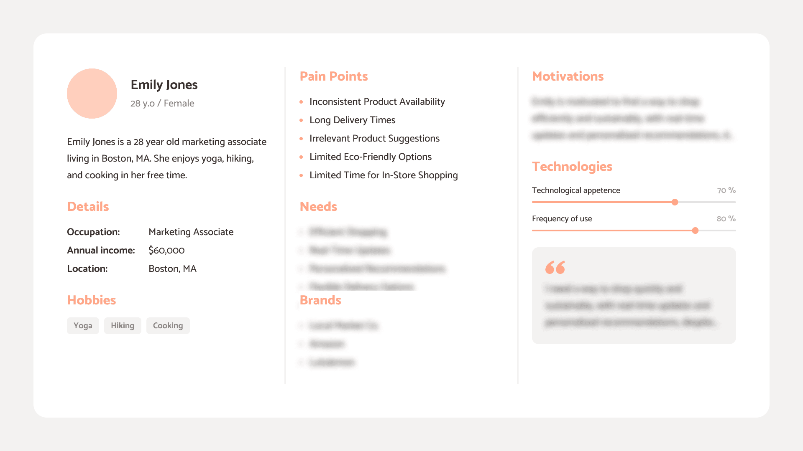
03 / USER FLOW
Connect discovery to a completed purchase
I mapped the path from product search through checkout to check whether the information shoppers worry about, such as fees, availability and timing, shows up when they need it, and whether the flow could support more stores later.

04 / EXPLORATION
Establish the shopping structure
I sketched the key mobile screens before the visual design. The challenge was to make shopping efficient while leaving room for promotions and future expansion.
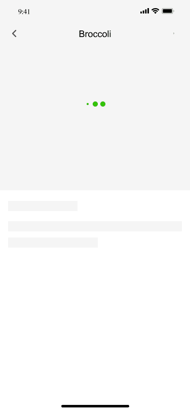
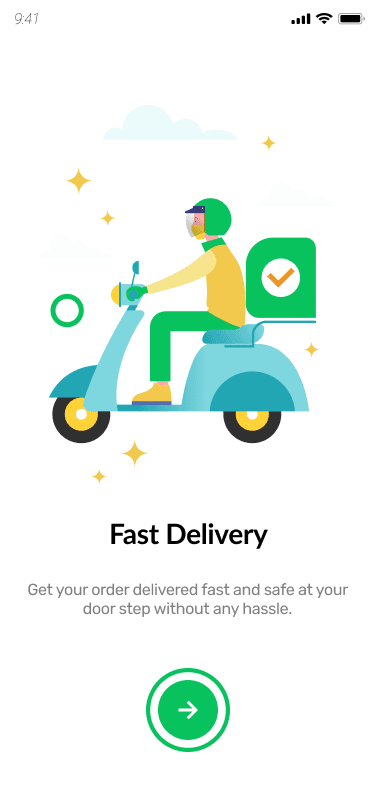
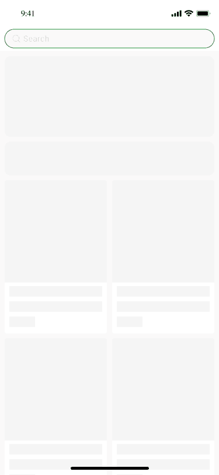
05 / MOBILE SOLUTION
A familiar journey on a small screen
The mobile designs carry the shopping journey into the final interface, with product information, navigation and purchase actions sharing one visual language. In the cart, unavailable items sit in their own “Not Available” group, separate from what can be bought.


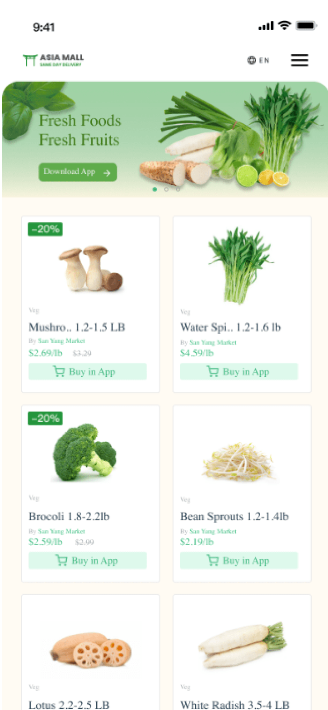
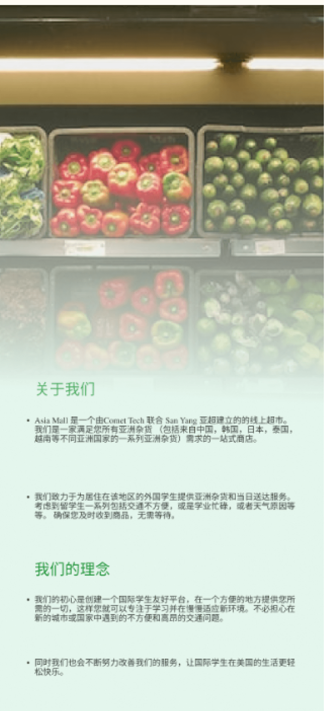
06 / WEB SOLUTION
Extend the same journey to desktop
The web designs adapt the same shopping sequence to a wider viewport, so navigation and content hierarchy stay recognizable across devices.
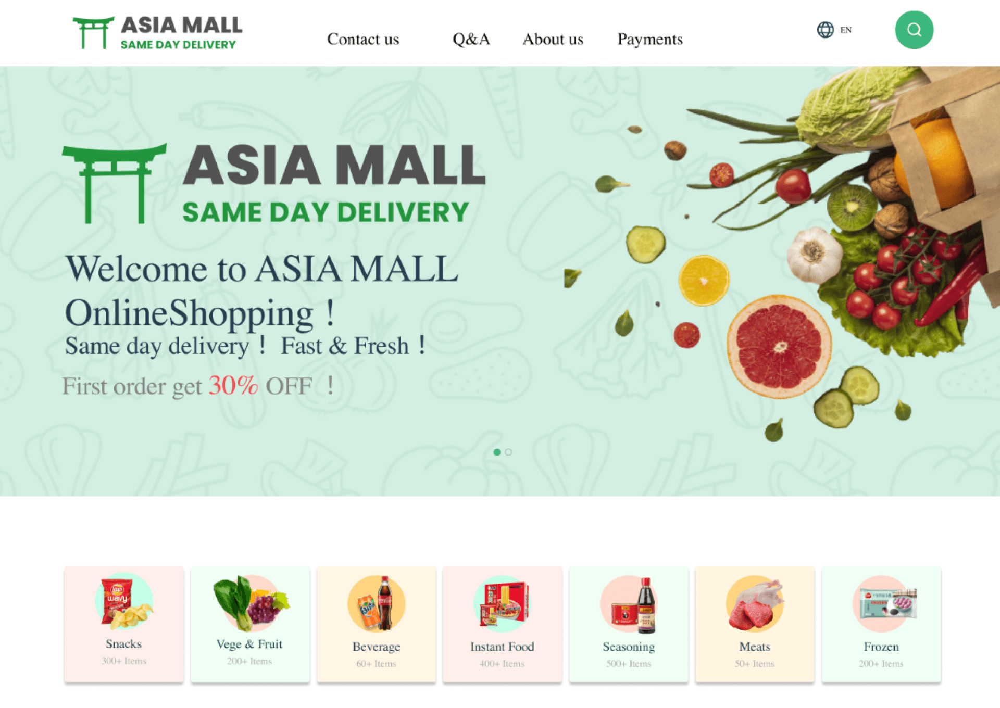
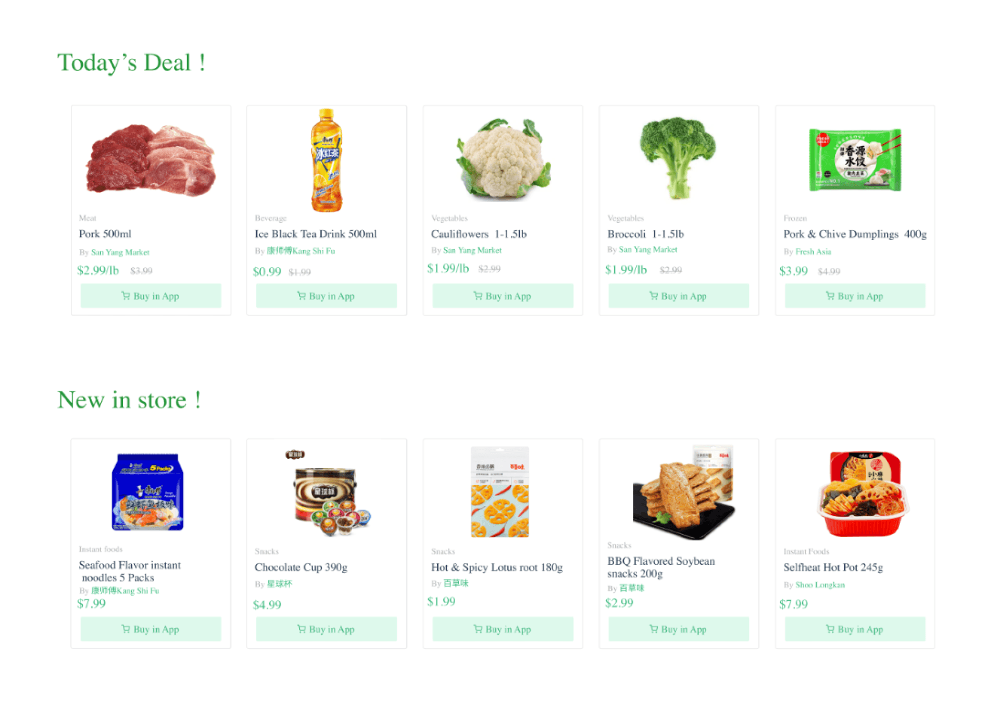
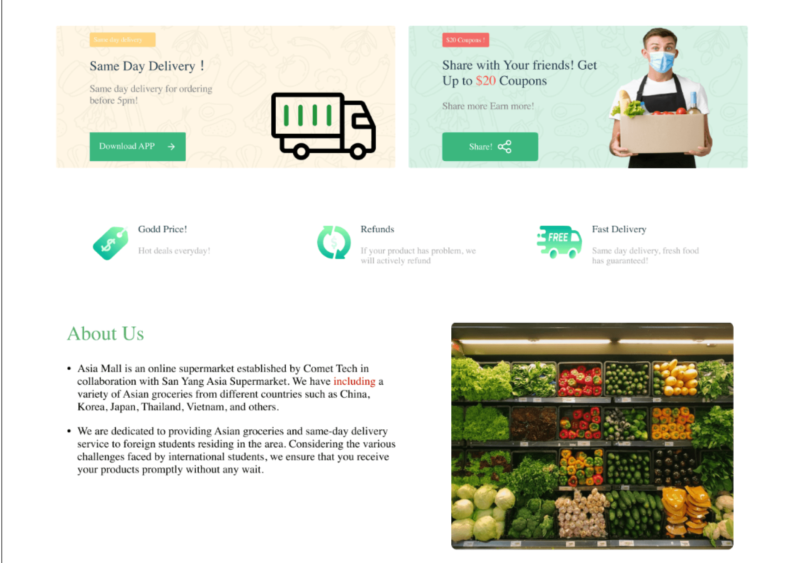
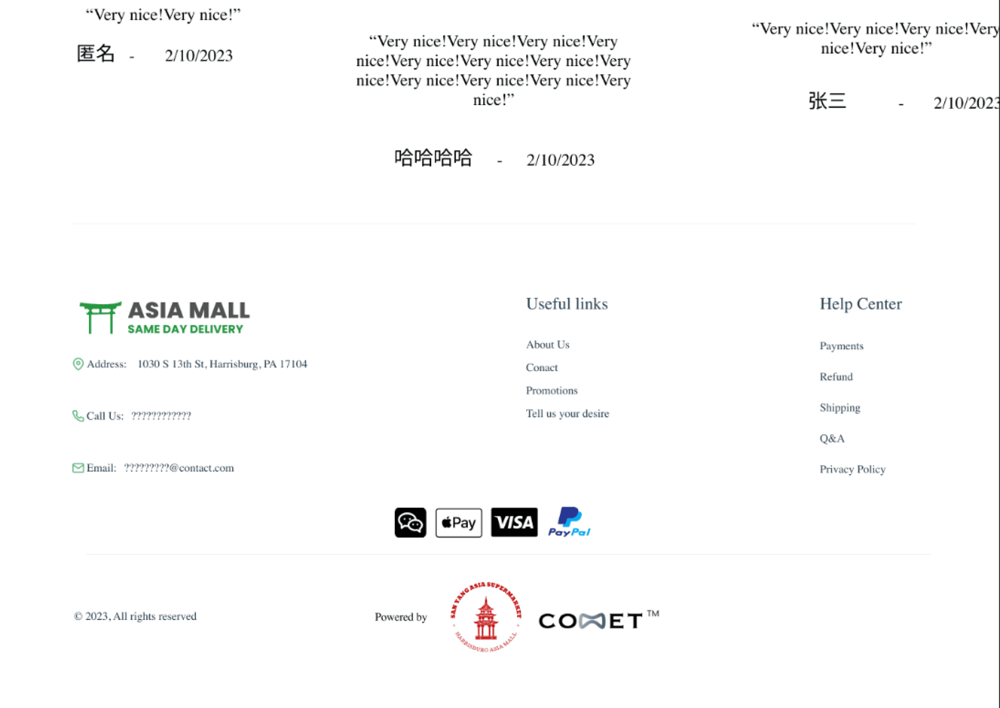
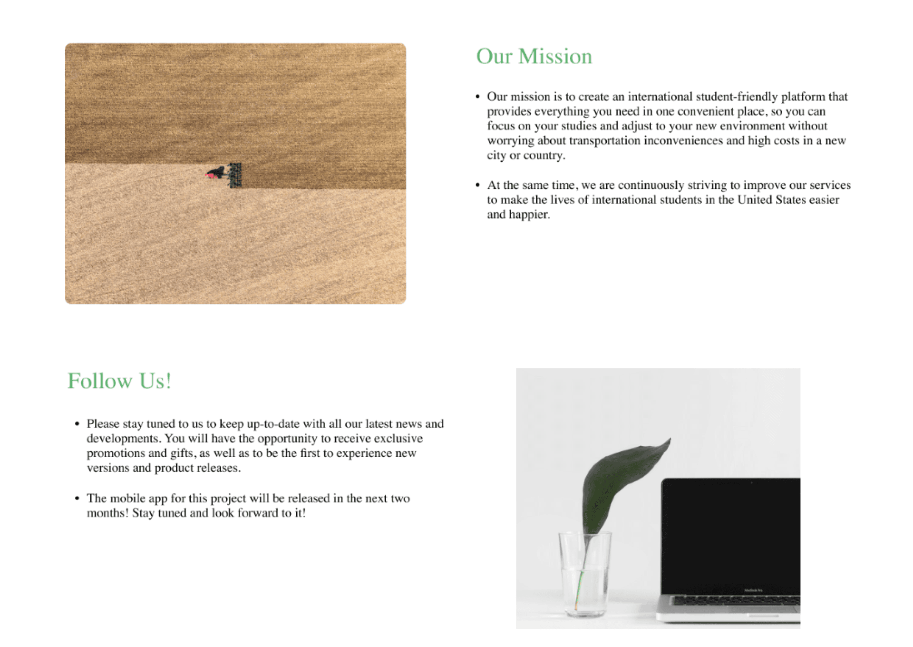
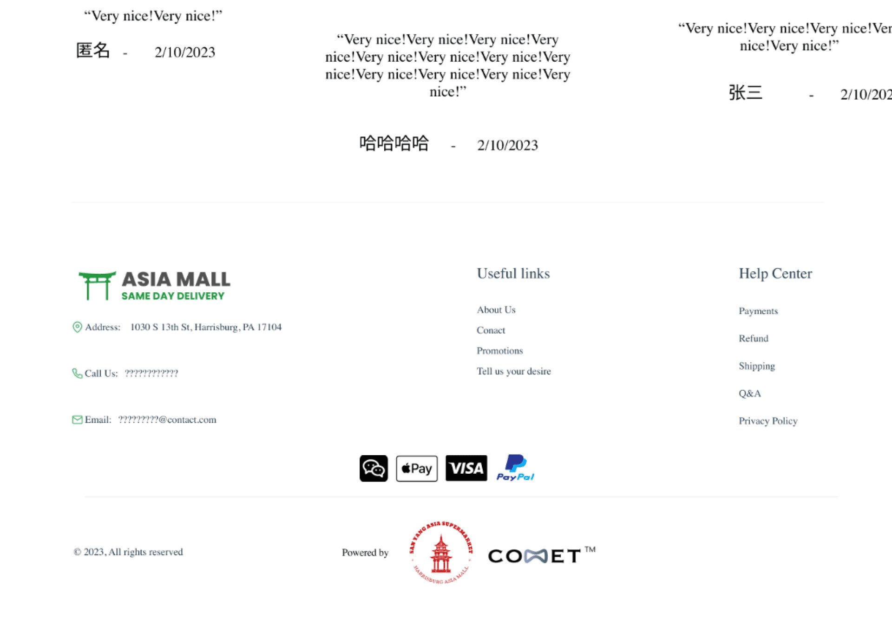
07 / TESTING
A few people tried it, and it was missing things
I asked a few people to test the design. They found functionality that was missing; for example, products didn’t show their weight. I fixed these gaps, and the revised design was released and ran for a period of time.
I don’t have post-launch metrics to report.
08 / REFLECTION
What I would do differently
The testing was informal and the group was small, and my interviewees were recruited through my own networks, so I treat the findings as directional. Next time I’d test with the same kind of students I interviewed, using one fixed task that includes an unavailable item and a strict budget. That would show whether they understand the fees and can recover when their first choice is out of stock.